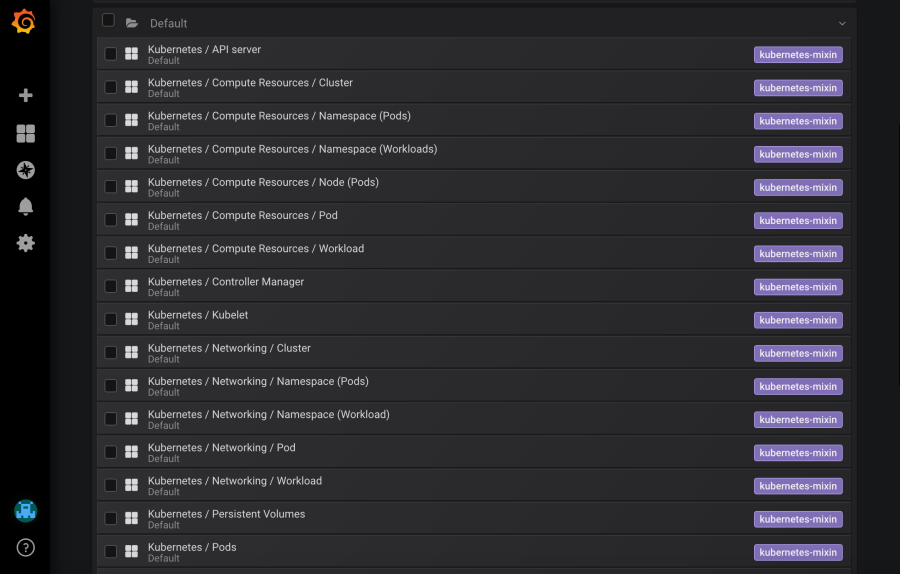

jsonnet项目实战-kube-prometheus
学习了jsonnet 学习下jsonnet的项目
kube-prometheus的项目地址
https://github.com/prometheus-operator/kube-prometheusgojsontoyaml的项目地址
https://github.com/brancz/gojsontoyamlkube-prometheus 把k8s集群的通用监控标准化，达到“开箱即用”的效果，是个很“贴心”的项目。它本来是Prometheus Operator的一部分，后来分离出来独立发布。
这个项目用jsonnet维护。 jsonnet是一个模板语言，用来生成json文件，大多用来维护配置。k8s的配置大家习惯用yaml保存， 所以生成的json又用了一个golang工具gojsontoyaml转了一下格式，保存在manifest/目录下。项目原生的配置文件也被提交到了repo，所以对于没有定制要求的使用者，直接用manifest/下的文件就够了。
这里需要注意兼容性， 项目里维护了几个分支，对应k8s的不同版本，要根据实际情况选择，这点参见README.md。 比如我们运行1.16，选择分支release-0.4。
manifest/有个子目录manifest/setup/，保存的是namespace和CRD，需要先于其他文件创建，生效之后再创建manifest/中的其他内容。 把repo 克隆下来，执行下面命令：
cd kube-prometheus
kubectl create -f manifests/setup
until kubectl get servicemonitors --all-namespaces ; do date; sleep 1; echo ""; done
kubectl create -f manifests/
它会自动完成如下工作：**
• 一个新的表空间monitoring
• Prometheus Operator和相关的CRD
• 两节点的Prometheus服务
• 三节点的Alert Manager服务
• 每个节点上部署node-exporter
• 提供k8s相关指标的服务
• 单节点grafana和通用的dashboard
• 通用的监控告警规则
• 上述服务间的整合及传输加密
运行成功后，monitoring这个namepace应该有下面资源：
# kubectl get pod -nmonitoring
NAME READY STATUS RESTARTS AGE
alertmanager-main-0 2/2 Running 0 85d
alertmanager-main-1 2/2 Running 0 85d
alertmanager-main-2 2/2 Running 0 85d
grafana-8499b48c69-wlrq2 1/1 Running 0 10d
kube-state-metrics-6f856648b9-gt9hq 3/3 Running 0 109d
node-exporter-2vhqr 2/2 Running 0 109d
node-exporter-66hq7 2/2 Running 0 109d
node-exporter-9xzzw 2/2 Running 0 109d
node-exporter-bqjqs 2/2 Running 0 109d
node-exporter-br4bd 2/2 Running 0 109d
node-exporter-mc24r 2/2 Running 0 109d
node-exporter-vm7h2 2/2 Running 0 109d
prometheus-adapter-54d6dfd87b-k6dqg 1/1 Running 0 109d
prometheus-k8s-0 3/3 Running 0 85d
prometheus-k8s-1 3/3 Running 0 85d
prometheus-operator-76878f58ff-lpd56 1/1 Running 0 109d
# kubectl get svc -nmonitoring
NAME TYPE CLUSTER-IP EXTERNAL-IP PORT(S) AGE
alertmanager-main ClusterIP 172.25.245.53 <none> 9093/TCP 109d
alertmanager-operated ClusterIP None <none> 9093/TCP,9094/TCP,9094/UDP 109d
grafana ClusterIP 172.24.76.224 <none> 3000/TCP 109d
kube-state-metrics ClusterIP None <none> 8443/TCP,9443/TCP 109d
node-exporter ClusterIP None <none> 9100/TCP 109d
prometheus-adapter ClusterIP 172.17.98.210 <none> 443/TCP 109d
prometheus-k8s ClusterIP 172.21.148.119 <none> 9090/TCP 109d
prometheus-operated ClusterIP None <none> 9090/TCP 109d
prometheus-operator ClusterIP None <none> 8080/TCP 109d
组件web的访问分别对应几个service：
• Prometheus: prometheus-k8s.monitoring.svc:9090
• Alert Manager: alertmanager-main.monitoring.svc:9093
• Grafana: grafana.monitoring.svc:3000
具体的访问方法要根据你集群的实际情况配置。
用默认用户admin/admin登录grafana，能看到一组默认的dashboard:
默认的配置可能遇到几个问题：
• 所有用到的image都从源仓库获取。 如果集群用内部仓库，不能访问外网，拉取会失败。即使能对外访问，dockerhub和gcr这些国外镜像都不容易拉取。
• Prometheus的数据并没有持久化，实例重启后，历史数据会丢失。
• Alert Manager和grafana都是默认配置，告警没法自动发送到外部。
除此以外，如果还想把集群中运行的所有服务都整合到统一的监控体系中，就需要基于kube-prometheus进行修改
定制的原则
kube-prometheus这个项目开发的其实是一个jsonnet的库，核心代码在jsonnet/kube-prometheus目录下， 其他文件大多是说明和例子。 通过jsonnet解释执行example.jsonnet这个入口，在manifests/目录下生成之前提到的配置文件。
这个项目用到了很多上游的jsonnet库，比如：
• 用来生成k8s原生组件库： https://github.com/ksonnet/ksonnet-lib
• 生成grafana的组件库：https://github.com/grafana/jsonnet-libs
• 一部分预置的grafana面板和告警规则： https://github.com/kubernetes-monitoring/kubernetes-mixin
• ...
完整列表在jsonnet/kube-prometheus/jsonnetfile.json`。
jsonnet是google开发的模板语言(data templating language)，可以定义和生成json。 jsonnet支持变量、函数、条件、运算、包管理、错误处理等，用来更方便的维护配置文件。 创造一个新的语言来解决工程问题
jsonnet-builder是jsonnet的包管理工具,地址
https://github.com/jsonnet-bundler/jsonnet-bundler安装jsonnet-builder 和gojsontoyaml，这里要安装jsonnet，参考之前的内容
[root@centos7 ~]# GO111MODULE="on" go get github.com/jsonnet-bundler/jsonnet-bundler/cmd/jb
go: found github.com/jsonnet-bundler/jsonnet-bundler/cmd/jb in github.com/jsonnet-bundler/jsonnet-bundler v0.4.0
go: downloading github.com/fatih/color v1.7.0
go: downloading gopkg.in/alecthomas/kingpin.v2 v2.2.6
go: downloading github.com/pkg/errors v0.8.0
go: downloading github.com/mattn/go-colorable v0.0.9
go: downloading github.com/mattn/go-isatty v0.0.6
go: downloading golang.org/x/sys v0.0.0-20190310054646-10058d7d4faa
go: downloading github.com/alecthomas/units v0.0.0-20151022065526-2efee857e7cf
go: downloading github.com/alecthomas/template v0.0.0-20160405071501-a0175ee3bccc
[root@centos7 ~]# go get github.com/brancz/gojsontoyaml
[root@centos7 ~]# cp go/bin/jb /usr/local/bin/
[root@centos7 ~]# cp go/bin/gojsontoyaml /usr/local/bin/
克隆kube-prometheus库
[root@centos7 kube-prometheus]# mkdir kube-prometheus; cd kube-prometheus
[root@centos7 kube-prometheus]# jb init
[root@centos7 kube-prometheus]# ll
总用量 4
-rw-r--r-- 1 root root 66 7月 12 16:43 jsonnetfile.json
[root@centos7 kube-prometheus]# jb install github.com/prometheus-operator/kube-prometheus/jsonnet/kube-prometheus@release-0.5
GET https://github.com/prometheus-operator/kube-prometheus/archive/b5fbe81d9acab3cf30d3840f1e73b2aad8d6d5ef.tar.gz 200
GET https://github.com/kubernetes/kube-state-metrics/archive/e72315512a38653b19dcfe4429f93eadedc0ea96.tar.gz 200
GET https://github.com/prometheus/prometheus/archive/cd12f0873c3eb2031f7ba9b2e169449aa1012e3f.tar.gz 200
GET https://github.com/coreos/prometheus-operator/archive/beaa1a519e21c8230bab86a15c04bf7e0a9267c1.tar.gz 200
GET https://github.com/coreos/etcd/archive/41061e56ad9d654fea2ee02c851d2a74e0a8a593.tar.gz 200
GET https://github.com/ksonnet/ksonnet-lib/archive/0d2f82676817bbf9e4acf6495b2090205f323b9f.tar.gz 200
GET https://github.com/kubernetes-monitoring/kubernetes-mixin/archive/fe9c4458915fc27c3320918e1a25af91911ea3e2.tar.gz 200
GET https://github.com/kubernetes/kube-state-metrics/archive/e72315512a38653b19dcfe4429f93eadedc0ea96.tar.gz 200
GET https://github.com/prometheus/node_exporter/archive/fa4edd700ebc1b3614bcd953c215d3f2ab2e0b35.tar.gz 200
GET https://github.com/brancz/kubernetes-grafana/archive/57b4365eacda291b82e0d55ba7eec573a8198dda.tar.gz 200
GET https://github.com/grafana/grafonnet-lib/archive/3082bfca110166cd69533fa3c0875fdb1b68c329.tar.gz 200
GET https://github.com/grafana/jsonnet-libs/archive/e273b9e0cdbac924c9b840780304b3f101aaffe4.tar.gz 200
GET https://github.com/kubernetes-monitoring/kubernetes-mixin/archive/a54540b92fb7b2d0826c0eff741e0894943babc7.tar.gz 200
[root@centos7 kube-prometheus]# ll
总用量 8
-rw-r--r-- 1 root root 294 7月 12 16:45 jsonnetfile.json
-rw-r--r-- 1 root root 4037 7月 12 16:45 jsonnetfile.lock.json
drwxr-xr-x 3 root root 301 7月 12 16:45 vendor
[root@centos7 kube-prometheus]# jb update
GET https://github.com/prometheus-operator/kube-prometheus/archive/b5fbe81d9acab3cf30d3840f1e73b2aad8d6d5ef.tar.gz 200
GET https://github.com/coreos/etcd/archive/41061e56ad9d654fea2ee02c851d2a74e0a8a593.tar.gz 200
GET https://github.com/coreos/prometheus-operator/archive/beaa1a519e21c8230bab86a15c04bf7e0a9267c1.tar.gz 200
GET https://github.com/ksonnet/ksonnet-lib/archive/0d2f82676817bbf9e4acf6495b2090205f323b9f.tar.gz 200
GET https://github.com/kubernetes/kube-state-metrics/archive/e72315512a38653b19dcfe4429f93eadedc0ea96.tar.gz 200
GET https://github.com/prometheus/node_exporter/archive/fa4edd700ebc1b3614bcd953c215d3f2ab2e0b35.tar.gz 200
GET https://github.com/brancz/kubernetes-grafana/archive/57b4365eacda291b82e0d55ba7eec573a8198dda.tar.gz 200
GET https://github.com/kubernetes-monitoring/kubernetes-mixin/archive/fe9c4458915fc27c3320918e1a25af91911ea3e2.tar.gz 200
GET https://github.com/kubernetes/kube-state-metrics/archive/e72315512a38653b19dcfe4429f93eadedc0ea96.tar.gz 200
GET https://github.com/prometheus/prometheus/archive/cd12f0873c3eb2031f7ba9b2e169449aa1012e3f.tar.gz 200
GET https://github.com/grafana/jsonnet-libs/archive/e273b9e0cdbac924c9b840780304b3f101aaffe4.tar.gz 200
GET https://github.com/kubernetes-monitoring/kubernetes-mixin/archive/a54540b92fb7b2d0826c0eff741e0894943babc7.tar.gz 200
GET https://github.com/grafana/grafonnet-lib/archive/3082bfca110166cd69533fa3c0875fdb1b68c329.tar.gz 200
[root@centos7 kube-prometheus]# wget https://raw.githubusercontent.com/prometheus-operator/kube-prometheus/release-0.5/build.sh
[root@centos7 kube-prometheus]# wget https://raw.githubusercontent.com/prometheus-operator/kube-prometheus/release-0.5/example.jsonnet
example.jsonnet是定制的起点，我们先复制这个文件到你自己命名的项目文件，比如我们是zhangsan.jsonnet，然后用jsonnet执行。(法外狂徒zhangsan 狗头.jpg)
然后开始跑下我们的项目
[root@centos7 kube-prometheus]# cp example.jsonnet zhangsan.jsonnet
[root@centos7 kube-prometheus]# ./build.sh zhangsan.jsonnet
看下脚本内容
[root@centos7 kube-prometheus]# cat build.sh
#!/usr/bin/env bash
# This script uses arg $1 (name of *.jsonnet file to use) to generate the manifests/*.yaml files.
set -e
set -x
# only exit with zero if all commands of the pipeline exit successfully
set -o pipefail
# Make sure to use project tooling
PATH="$(pwd)/tmp/bin:${PATH}"
# Make sure to start with a clean 'manifests' dir
rm -rf manifests
mkdir -p manifests/setup
# optional, but we would like to generate yaml, not json
jsonnet -J vendor -m manifests "${1-example.jsonnet}" | xargs -I{} sh -c 'cat {} | gojsontoyaml > {}.yaml; rm -f {}' -- {}
解释下
set -e
set命令的-e参数，linux自带的说明如下：
"Exit immediately if a simple command exits with a non-zero status."
也就是说，在"set -e"之后出现的代码，一旦出现了返回值非零，整个脚本就会立即退出。有的人喜欢使用这个参数，是出于保证代码安全性的考虑。但有的时候，这种美好的初衷，也会导致严重的问题。
set -o pipefail
对于set命令-o参数的pipefail选项，linux是这样解释的：
"If set, the return value of a pipeline is the value of the last (rightmost) command to exit with a non-zero status,or zero if all commands in the pipeline exit successfully. This option is disabled by default."
设置了这个选项以后，包含管道命令的语句的返回值，会变成最后一个返回非零的管道命令的返回值。听起来比较绕，其实也很简单：
# test.sh
set -o pipefail
ls ./a.txt |echo "hi" >/dev/null
echo $?
运行test.sh，因为当前目录并不存在a.txt文件，输出：
ls: ./a.txt: No such file or directory
1 # 设置了set -o pipefail，返回从右往左第一个非零返回值，即ls的返回值1
注释掉set -o pipefail 这一行，再次运行，输出：
ls: ./a.txt: No such file or directory
0 # 没有set -o pipefail，默认返回最后一个管道命令的返回值
set -x
用于脚本调试。命令执行过程打印到屏幕
set -x 是开启 set -x是关闭
PATH=
"$(pwd)/tmp/bin:${PATH}"设置当前目录的/tmp/bin为环境变量
jsonnet -J vendor -m manifests
"${1-example.jsonnet}" | xargs -I
{} sh -c
'cat {} | gojsontoyaml > {}.yaml; rm -f {}' --
{}• -J指定库文件的位置，这里只扫描vendor/文件夹里的内容。 前面我们也提到了， jb update会把所有库文件都保存在vendor下。
• -m用到了jsonnet的一个特性，它会把生成的json的最顶层键名作为文件名，值作为内容，写入多个文件，并把文件名输出到标准输出。 目标文件夹是manifests/
• "${1-example.jsonnet}"bash的特性，如果没有传入$1，则把example.jsonnet作为输入。
• xargs这一段从pipe读取jsonnet输出的文件名，逐个用gojsontoyaml转格式，并写入加了.yaml后缀的文件。
然后再看
再看example.jsonnet的内容(以release-05为例)：
[root@centos7 kube-prometheus]# cat zhangsan.jsonnet
local kp =
(import 'kube-prometheus/kube-prometheus.libsonnet') +
// Uncomment the following imports to enable its patches
// (import 'kube-prometheus/kube-prometheus-anti-affinity.libsonnet') +
// (import 'kube-prometheus/kube-prometheus-managed-cluster.libsonnet') +
// (import 'kube-prometheus/kube-prometheus-node-ports.libsonnet') +
// (import 'kube-prometheus/kube-prometheus-static-etcd.libsonnet') +
// (import 'kube-prometheus/kube-prometheus-thanos-sidecar.libsonnet') +
{
_config+:: {
namespace: 'monitoring',
},
};
{ ['setup/0namespace-' + name]: kp.kubePrometheus[name] for name in std.objectFields(kp.kubePrometheus) } +
{
['setup/prometheus-operator-' + name]: kp.prometheusOperator[name]
for name in std.filter((function(name) name != 'serviceMonitor'), std.objectFields(kp.prometheusOperator))
} +
// serviceMonitor is separated so that it can be created after the CRDs are ready
{ 'prometheus-operator-serviceMonitor': kp.prometheusOperator.serviceMonitor } +
{ ['node-exporter-' + name]: kp.nodeExporter[name] for name in std.objectFields(kp.nodeExporter) } +
{ ['kube-state-metrics-' + name]: kp.kubeStateMetrics[name] for name in std.objectFields(kp.kubeStateMetrics) } +
{ ['alertmanager-' + name]: kp.alertmanager[name] for name in std.objectFields(kp.alertmanager) } +
{ ['prometheus-' + name]: kp.prometheus[name] for name in std.objectFields(kp.prometheus) } +
{ ['prometheus-adapter-' + name]: kp.prometheusAdapter[name] for name in std.objectFields(kp.prometheusAdapter) } +
{ ['grafana-' + name]: kp.grafana[name] for name in std.objectFields(kp.grafana) }
整个文件其实分两个部分：
L1就是第一行的意思
1. L1-14定义了变量kp， 你可以不断用+去添加和覆盖。
2. L2的(import xxx.libsonnet)就是简单地把libsonet的内容替换到这个位置。
3. L10-14实际是一个替换操作。代码里约定俗成，所有用到namspace的地方，都会从$_config.namespace获取。 这里利用+和"late bound"，等同于替换了所有引用namespace的地方。 另外，我们注意到L11中的_config+::用的是双引号，代表_config这个对象，不会出现在最后json的结果中。
4. L16-28控制实际的输出。以L23为例，上面提到build.sh会用最顶层的键名作为文件名，这行输出的文件名是['node-exporter-' + name]， 其中name是通过 std.objectFields()这个标准函数，循环读取某个键下元素名，这个例子里是kp.nodeExporter代表kp变量中nodeExporter下的元素。
有个要点，各个库习惯把可配置的变量写在{_config:: {<组件名>: { ... } } }， 定制的时候用+直接修改。那么如何知道哪些变量可以设置呢？一种方法是读项目里提供的例子，另一种就是读库的源码。 另外，对某些设置，可能库并没有提供_config下的变量， 一般来说，这是库作者不推荐修改的，但是你仍旧可以利用jsonnet的特性去做，通常更复杂些。
如何开始定制？
针对已有组件的配置修改
在动手之前，推荐先阅读所有的例子，如果恰巧有匹配的，就照例子修改，主要是对变量kp的修改。这些例子包括：
• README.md里Customization Example
• example/下的文件
• jsonnet/kube-prometheus/下的所有libsonnet
• 项目"issue"和"discussion"
监控其他通用系统
如果是基于已有组件的配置修改，大部分在例子里都能找到。 但如果是要添加新的监控对象，比如kafka，则需要做这些工作：
◇ 选择exporter： 用于获取目标的metrics。 参考Prometheus的官网，一些常用系统的exporter。
◇ 定制dashboard： 可以从grafana的社区中找模板，自己修改。
◇ 编写jsonnet生成相关的配置。 包括exporter的deployment， 设计serviceMonitor，设计告警规则，把dashboard加入grafana。
监控自有应用
自有应用需要自己编写全部内容。
◇ 开发exporter： 开发一个接口。这里可以重用k8s的liveness和readness，让它输出Prometheus的metrics的格式。 这样，在监控目标健康状况的同时，收集metrics。
◇ 创建dashboard： 自己用PromQL设计指标，在grafana中用设计呈现，再把设计好的dashboard导出成json供整合用。
◇ 编写jsonnet生成相关的配置。
测试环境和生产环境
最后提一下环境的切换。 从测试的角度，配置修改都需要在测试环境运行通过后，再应用到生产环境中。 这两个环境不完全相同，比如域名，告警邮件地址，告警的钉钉群等等。 如何能方便的切换生成这两个环境的配置？分享一下我的经验：
◇ 创建两个文件，比如zhangsan-env-lab.json和zhangsan-env-production.json，把各环境不同变量分别定义在里面，比如
{
"domain": ".example.xxxx.cn",
"email": "example@xxxx.com",
"ding": "000000000000000000000000000000000000000000000000000000"
}
◇ 修改build.sh中执行jsonnet那行，增加--ext-str env="production"，即从命令行传入变量，这是jsonnet的功能。
◇ 在zhangsan.jsonnet中根据env判断要引入的哪个json文件，这样后续就可以通过$._config.zhangsanbox.变量名，引用json里的值了。
local kp =
...
{
_config+:: {
...
zhangsanbox:
// read env type
local env = std.extVar("env");
// loading envs from external json
if env == 'production' then
(import 'zhangsan-env-production.json')
else
(import 'zhangsan-env-lab.json'),
...
◇ 复制build.sh到一个新的文件比如build-test.sh，修改成--ext-str env="lab"
◇ 这样执行./build.sh zhangsan.jsonnet和./build-test.sh zhangsan.jsonnet会对应生产和测试环境的配置。